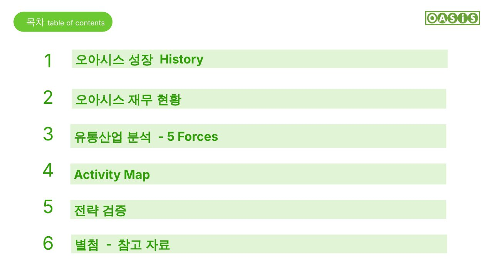

어디에서 사시나요? 오아시스에서 살고, 오아시스에서 사고!
Live in OASIS, Buy at OASIS!
오아시스는 2023년 2월 상장을 철회했습니다. 이 발표는 오아시스가 어떤 회사인지, 유통산업에서 어떤 위치인지, 가치 제안과 활동이 어떻게 연결되는지, 그리고 어떤 전략이 성장과 수익성을 높일 수 있는지를 다룹니다.
2011년 설립부터 상장 철회까지의 흐름과 2022~2023년 분기 실적
공급자·구매자 협상력, 신규진입자, 대체재, 기존 경쟁강도로 본 시장 매력도
가치 제안 4가지와 활동의 연결, 제안하는 To-Be 활동
지속가능성·수익성 확보, 수도권 집중 물류센터·SKU 전략과 모니터링 요소
국내 새벽배송 시장, 컬리와의 물류·재무 비교, 원본 슬라이드

22학번 우유신(발표) · 오전석 · 이정빈 · 정일균 · 황인창